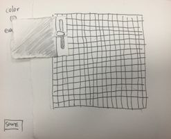
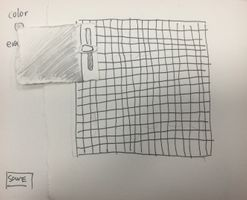
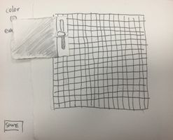

Through paper prototyping, I find serveral issues I have in my design. Users don't know where to start and don't know that they should create a canvas first; many times they choose to start with color picker. So I improved my design by making canvas size on a seperate tab.
